O que é e como calcular o Índice de Validade de Conteúdo (IVC)?

O que é o Índice de Validade de Conteúdo (IVC)?
Imagine que você desenvolveu um questionário composto por vários itens (perguntas) referentes a depressão. Como garantir que esse questionário é válido, isso é, de fato está aferindo o que se propõe a aferir, a depressão? Para que tenhamos essa garantia, esse questionário precisa passar por validações. Uma delas é a chamada validade (ou validação) de conteúdo (em inglês, content validity).
Na validação de conteúdo, especialistas (chamados também de experts, avaliadores ou juízes) avaliam cada item do novo questionário com uma nota de 1 a 4 que se refere à relevância/ representatividade para o constructo que se deseja mensurar (no exemplo acima, depressão). As notas de 1 a 4 correspondem, geralmente, a:
- 1 = o item não é relevante ou representativo
- 2 = o item precisa de uma grande revisão para ser relevante/ representativo
- 3 = o item precisa de uma pequena revisão para ser relevante/ representativo
- 4 = o item é relevante ou representativo
Duas questões importantes podem estar passando pela sua cabeça:
- Como definir quem serão os avaliadores?
- Quantos avaliadores eu devo incluir no estudo?
Com relação ao quem, a decisão é mais subjetiva: você deve contatar especialistas naquele constructo que você pretende aferir com o questionário. Por exemplo, se o constructo é depressão, devem ser contatados psicólogos e psiquiatras com experiência em depressão.
Mas a segunda pergunta tem uma resposta mais objetiva. Lynn (1986) recomenda incluir pelo menos 5 avaliadores, sendo que quanto mais, melhor – mas não há necessidade de mais do que 10. Além disso, ela discute que pode ser difícil encontrar experts em alguns domínios/ constructos. Nesses casos, o pesquisador deve recrutar no mínimo 3 avaliadores (Lynn, 1986).
O IVC é uma medida calculada a partir das avaliações desses experts. Mas aqui eu preciso te contar que há três tipos de IVC (em inglês abreviado como CVI, de Content Validity Index):
- IVC-I: um índice calculado para cada item (daí vem o I da sigla) do questionário, que reflete a relevância/ representatividade daquele item, de acordo com os experts.
- IVC-S/Ave: um índice calculado para a escala como um todo (daí vem o S, do inglês Scale) que corresponde à média (Ave, do inglês Average) de todos os IVC-I.
- IVC-S/UA: um índice também calculado para a escala como um todo que corresponde à proporção de IVC-I iguais a 1. O UA da sigla vem de “Universal Agreement”, em tradução livre “concordância universal”.
Vamos, então, discutir como calcular e interpretar cada um deles.
Você chegou a esse post porque precisa calcular o IVC para os seus dados, mas não tem tempo para aprender a calculá-lo? Eu ofereço um serviço de análise de dados em que você pode me contratar para realizar esse cálculo. O contato é via formulário que está nesta página.
Como calcular o IVC-I?
O cálculo do IVC-I, ou seja, do IVC para cada item, é simples. Para isso, basta dividirmos a quantidade de avaliações 3 ou 4 que aquele item recebeu pela quantidade total de respostas:
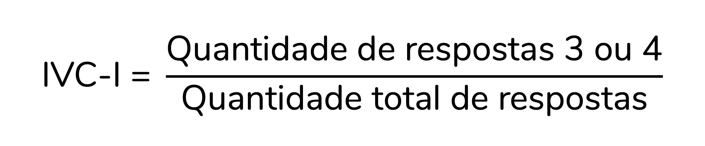
Para isso fazer mais sentido, vamos calcular o IVC-I para alguns itens:
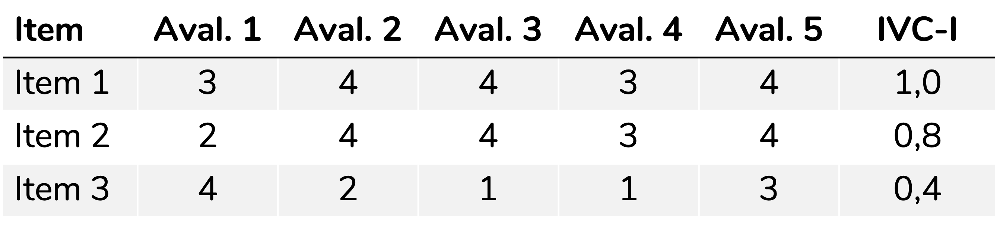
Veja que há 5 avaliadores e para o primeiro item há 5 avaliações 3 ou 4. Logo, o IVC-I será:
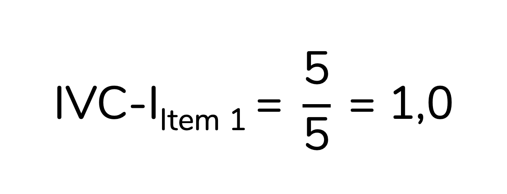
Já para o Item 3, há apenas 2 avaliações 3 ou 4, em 5 avaliações no total. Portanto, o IVC-I será:
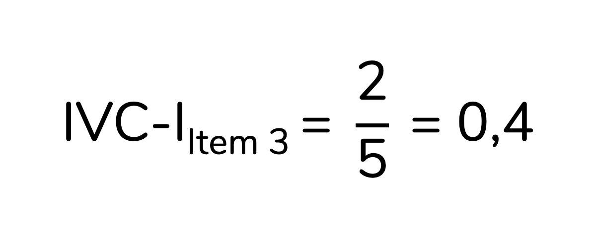
Como interpretar o IVC-I? Quando um item é considerado adequado, de acordo com o IVC-I?
Perceba que o IVC-I corresponde à proporção de concordância entre os avaliadores para aquele item, considerando-se que os avaliadores que responderam 3 ou 4 concordam que o item é relevante/ representativo.
Polit; Beck; Owen (2007) recomendam que itens com IVC-I superior a 0,78 sejam considerados adequados.
Como calcular os IVC-S?
Como discutimos, há dois tipos de IVC para a escala (IVC-S): o Ave e o UA. Vale dizer que essa divisão e nomenclatura não são um consenso. Muita gente calcula um deles e o reporta apenas como “IVC-S”, sem que fique claro qual das versões foi calculada. Polit e Beck discutem justamente isso em seu artigo de 2006, o qual propõe a nomenclatura IVC-S/Ave e IVC-S/UA (Polit; Beck, 2006). Portanto, eu recomendo que você calcule as duas versões do IVC-S no seu trabalho e referencie esse artigo.
O IVC-S/Ave é bem simples de calcular: ele corresponde à média de todos os IVC-I. Já IVC-S/UA corresponde à proporção de IVC-I iguais a 1. Note que para que um item tenha um IVC-I igual a 1 todos os experts precisam tê-lo avaliado como 3 ou 4. Ou seja, trata-se de um item que todos os experts consideraram representativo/ relevante. Daí vem o “concordância universal” (UA, do inglês Universal Agreement). Para isso fazer mais sentido, vamos calcular o IVC-S/Ave e o IVC-S/UA para a escala abaixo:
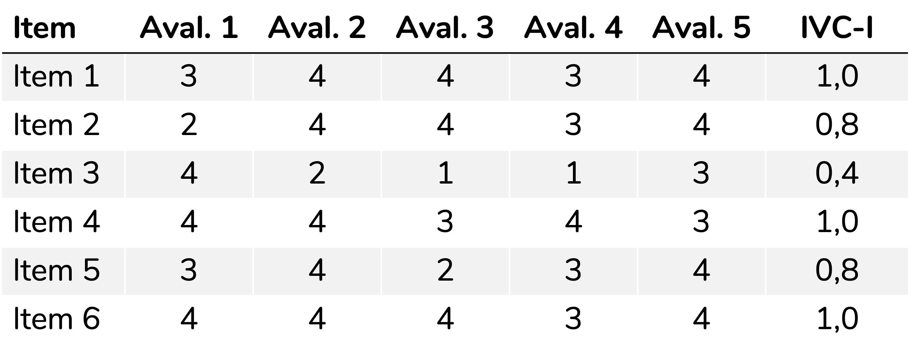
O IVC-S/Ave será a média de todos os IVC-I:
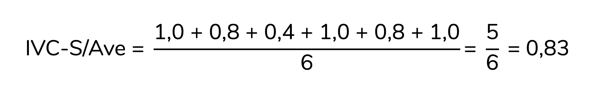
Já para calcular o IVC-S/UA devemos contar quantos IVC-I são iguais a 1,0 e então dividir essa quantidade pelo total de itens:
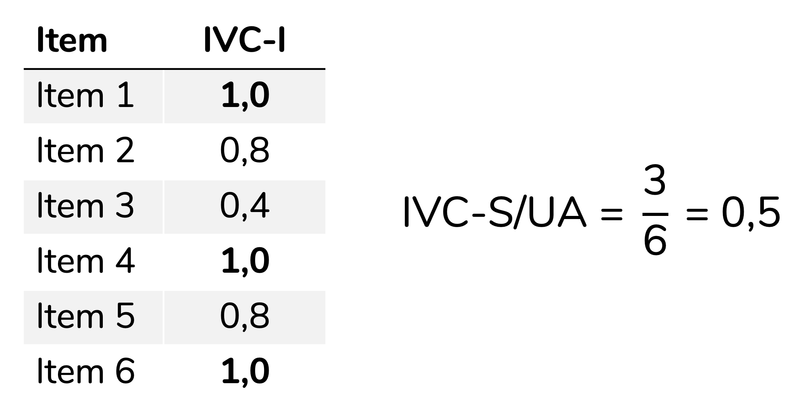
Para o IVC-S/Ave, Polit; Beck; Owen (2007) sugerem que valores iguais ou superiores a 0,9 indicam uma escala adequada. Para o IVC-S/UA, recomenda-se valores iguais ou superiores a 0,8 – mas os autores discutem que esse ponto de corte pode ser muito conservador (Polit; Beck; Owen, 2007).
E o kappa?
É bem comum que trabalhos que calculem o IVC também calculem o kappa. O kappa seria uma medida de concordância com uma correção para a concordância entre os avaliadores que seria esperada ao acaso (em inglês, chance agreement).
Aqui também os artigos divergem. Alguns calculam o kappa para a escala como um todo, geralmente utilizando o kappa de Fleiss. Eu tenho vídeos que ensinam a calcular essa medida no SPSS e no R.
Mas, eu quero discutir nesse post o kappa modificado, proposto por Polit; Beck; Owen (2007). A proposta dos autores é calcular um kappa que corresponda ao IVC-I corrigido para a probabilidade de concordância ao acaso. A fórmula para esse cálculo não é difícil, mas são raros os materiais didáticos – principalmente em português – que o discutem. Inclusive, esse kappa modificado foi a minha principal motivação para escrever esse post. Vamos ao seu cálculo, então.
Lembrando que eu ofereço um serviço de análise de dados em que você pode me contratar para realizar esse cálculo. O contato é via formulário que está nesta página.
O primeiro passo para calcular o kappa modificado – que os autores sugerem que seja representado como κ* – é calcular a probabilidade de concordância ao acaso, representada por pc (c de chance agreement, em inglês):
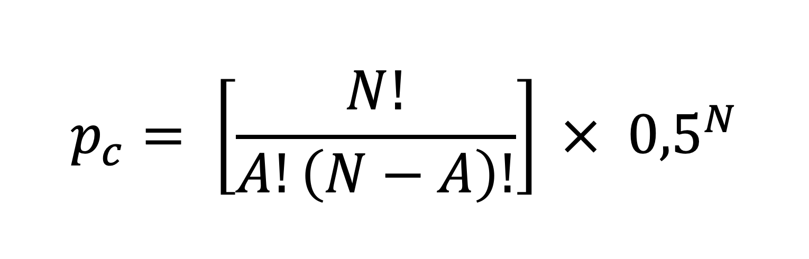
Sendo:
- N = a quantidade de avaliadores
- A = a quantidade de avaliaçoes 3 ou 4 que aquele item recebeu
Para isso fazer mais sentido, vamos calcular essas probabilidades para o item abaixo:
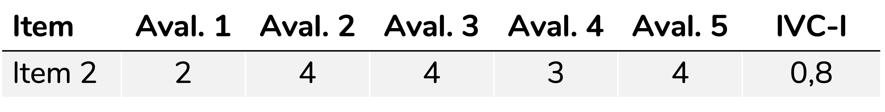
Veja que esse item foi avaliado por cinco avaliadores recebeu quatro avaliações 3 ou 4. Portanto, para esse item, N = 5 e A = 4. Logo, o cálculo da pc será:
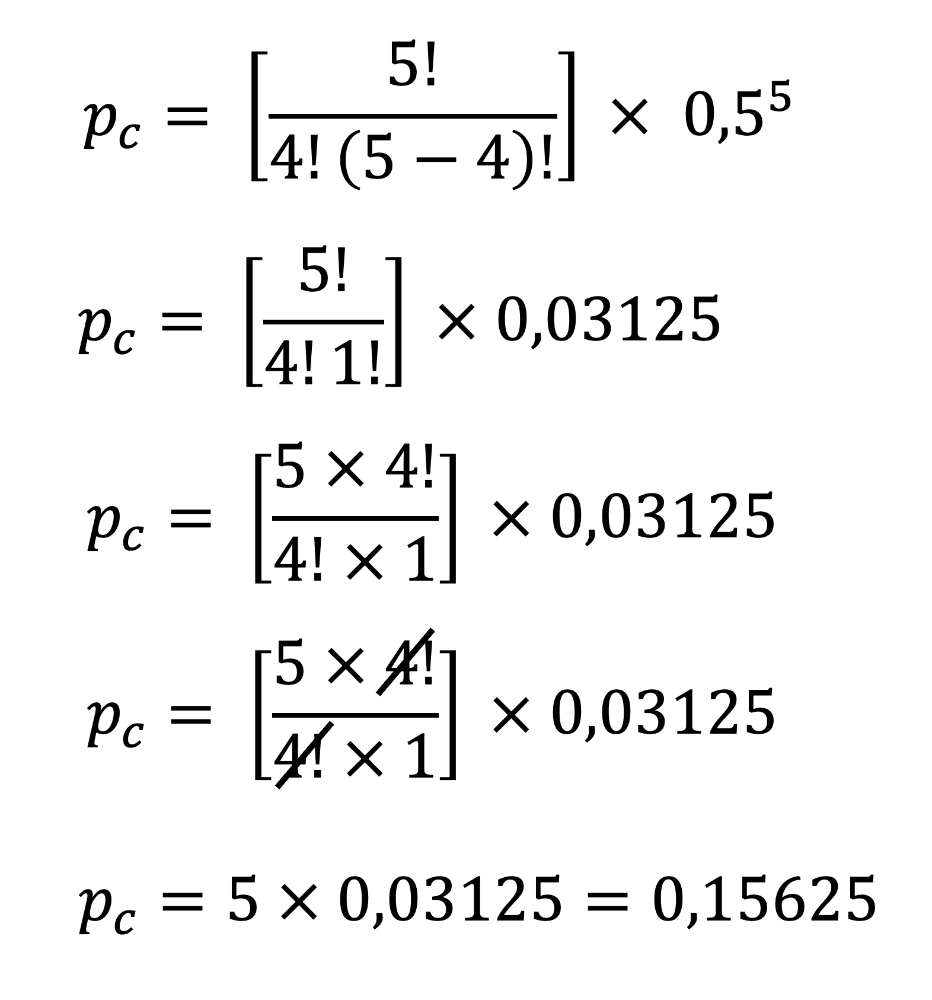
Sabendo a pc para aquele item, podemos agora calcular o kappa modificado (κ*), com a equação abaixo. Reforçando: todo esse cálculo é baseado no artigo de 2007 de Polit e colaboradores (Polit; Beck; Owen, 2007).
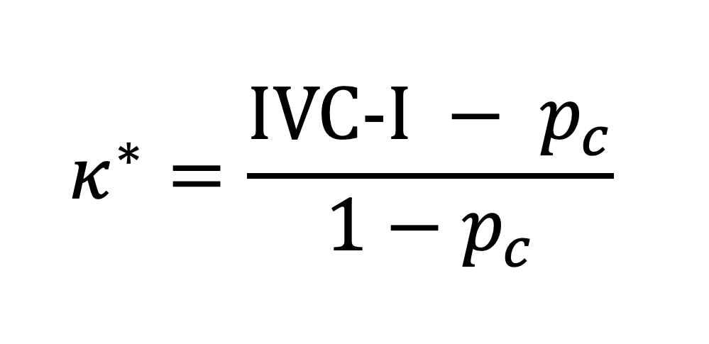
Aplicando a fórmula acima ao item 2, para o qual pc = 0,15625 e IVC-I = 0,8, teremos:
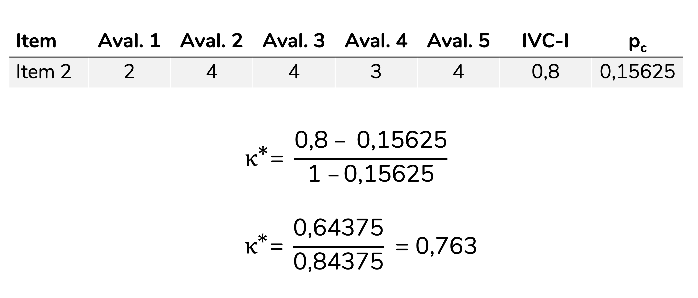
Esse valor de kappa modificado pode ser interpretado conforme as sugestões da literatura, sendo uma das mais utilizadas a de Landis; Koch (1977). De acordo com essa classificação, valores de kappa entre 0,21 e 0,40 indicam confiabilidade fraca; entre 0,41 e 0,60, moderada; entre 0,61 e 0,80, substancial e acima de 0,81, quase perfeita.
Como citar esse post, nas normas da ABNT
PERES, Fernanda F. O que é e como calcular o Índice de Validade de Conteúdo (IVC)?. Blog Fernanda Peres, São Paulo, 09 mai. 2025. Disponível em: https://fernandafperes.com.br/blog/ivc-kappa/.
comments powered by Disqus